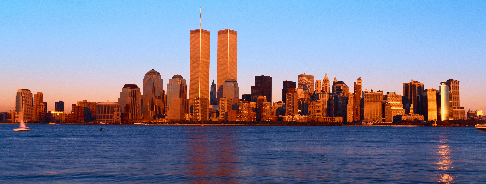

Inicio
Second Site
✨Regular Site✨
📺Este espacio es regular ya que puede que me encuentres viendo el atentado una y otra vez sin cansarme 📺

Manhattan skyline
Top of the word
Esta pagina se basara principalmente
En informar cuando obtendremos mejoras.